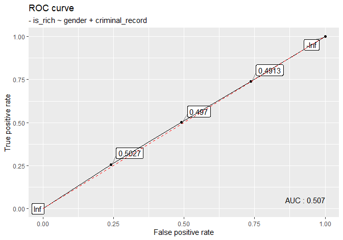
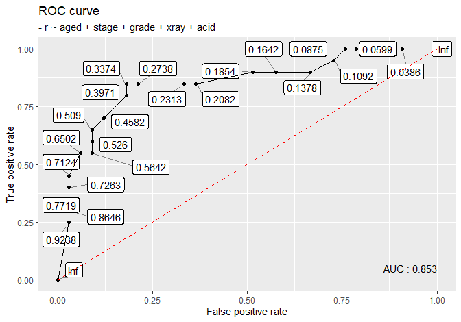

The following packages and datasets are used:
library(boot)
library(data.table)
# devtools::install_github('joon3216/funpark')
library(funpark)
library(ggplot2)
library(ggrepel)
library(pROC)
as_tibble <- dplyr::as_tibble
data(femsmoke, package = 'faraway')
data(nodal, package = 'SMPracticals')1. Introduction
In order to fit a model using logistic regression, we require a binary response. However, if we are given categorical features, such as age group, then data can be structured so that responses are not binary, but rather a count of cases for each combination of features. As an example, consider rich dataset where:
is_richis a response variable having 1 if the person is rich and 0 otherwisegenderis a categorical variable with two categories:MorFcriminal_recordis also a categorical variable:yesif the person has one, andnootherwise
set.seed(1024)
is_rich <- rbinom(10, size = 1, prob = .5)
gender <- rbinom(10, size = 1, prob = .5)
criminal_record <- rbinom(10, size = 1, prob = .5)
# Binary response
(rich <- data.table(
gender = ifelse(gender == 1, 'M', 'F'),
criminal_record = ifelse(criminal_record == 1, 'yes', 'no'),
is_rich = is_rich
))## gender criminal_record
## 1: F no
## 2: M no
## 3: F no
## 4: F no
## 5: M yes
## 6: F yes
## 7: M yes
## 8: M no
## 9: M no
## 10: F yes
## is_rich
## 1: 0
## 2: 1
## 3: 0
## 4: 0
## 5: 0
## 6: 1
## 7: 0
## 8: 0
## 9: 1
## 10: 1This rich dataset has a binary response. However, when you are given a dataset for the first time, it may have a following form:
# Binomial response
(rich_binom <- rich[
order(gender, criminal_record),
.(rich = sum(is_rich), not_rich = sum(!is_rich)),
by = "gender,criminal_record"
])## gender criminal_record
## 1: F no
## 2: F yes
## 3: M no
## 4: M yes
## rich not_rich
## 1: 0 3
## 2: 2 0
## 3: 2 1
## 4: 0 2or:
# Count; response variable is now 'count', not 'is_rich'
(rich_pois <- melt(
rich_binom,
id.vars = c('gender', 'criminal_record'),
variable.name = 'is_rich',
value.name = 'count'
))## gender criminal_record
## 1: F no
## 2: F yes
## 3: M no
## 4: M yes
## 5: F no
## 6: F yes
## 7: M no
## 8: M yes
## is_rich count
## 1: rich 0
## 2: rich 2
## 3: rich 2
## 4: rich 0
## 5: not_rich 3
## 6: not_rich 0
## 7: not_rich 1
## 8: not_rich 2Forms of rich_binom and rich_pois allow us to fit binomial and poisson regression respectively, but not the logistic regression. This document is about transforming the second and third dataset into the first one, i.e. binarizing datasets.
2. Case studies
The first case concern with transformation from a binomial response to a binary response, and the second case is from a count response to a binary response.
Case 1: nodal
nodal is the dataset in SMPracticals package where:
mis just a column of onesris an indicator of nodal involvement (1for yes,0for no)aged,stage,grade,xray,acidare categorical features
See here for more information.
## # A tibble: 53 x 7
## m r aged stage
## <dbl> <dbl> <fct> <fct>
## 1 1 1 0 1
## 2 1 1 0 1
## 3 1 1 0 1
## 4 1 1 0 1
## 5 1 1 0 1
## 6 1 0 0 1
## 7 1 1 0 0
## 8 1 0 0 0
## 9 1 0 0 0
## 10 1 0 0 0
## # ... with 43 more rows, and
## # 3 more variables:
## # grade <fct>, xray <fct>,
## # acid <fct>We can transform this into nodal_binom, the data that has binomial responses:
nodal_binom <- nodal[
,
.(m = sum(m), r = sum(r)),
by = c('aged', 'stage', 'grade', 'xray', 'acid')
][
,
c('yes_node', 'no_node', 'm', 'r') := list(r, m - r, NULL, NULL)
][
order(-yes_node, -no_node)
][]
as_tibble(nodal_binom)## # A tibble: 23 x 7
## aged stage grade xray
## <fct> <fct> <fct> <fct>
## 1 0 1 1 1
## 2 1 1 0 0
## 3 0 1 1 0
## 4 0 0 0 0
## 5 1 1 0 0
## 6 0 1 0 0
## 7 0 0 1 0
## 8 1 1 1 1
## 9 1 1 0 1
## 10 1 0 1 1
## # ... with 13 more rows, and
## # 3 more variables:
## # acid <fct>,
## # yes_node <dbl>,
## # no_node <dbl>nodal_binom has a form of rich_binom, where the last two columns are computed from r, the binary response in the original nodal data. yes_node is a count of 1’s in r in the original dataset, and no_node a count of 0’s.
The function binarize_binom will convert nodal_binom back to nodal. dpmf and rpmf (in funpark package) are used to create random names for variable and value columns in order to avoid duplicate names:
binarize_binom <- function(dat, responses, variable.name = NULL) {
# dat: a data whose features are categorical
# responses: a character vector of length 2; each element is the name of
# column that stores the counts of positive and negative
# responses, in this order.
# variable.name: a character; if NULL, then a randomly generated
# character will be used.
# Generate random names to avoid the same names as in features
all_alphabets <- c(
'A', 'a', 'B', 'b', 'C', 'c', 'D', 'd', 'E', 'e', 'F', 'f',
'G', 'g', 'H', 'h', 'I', 'i', 'J', 'j', 'K', 'k', 'L', 'l',
'M', 'm', 'N', 'n', 'O', 'o', 'P', 'p', 'Q', 'q', 'R', 'r',
'S', 's', 'T', 't', 'U', 'u', 'V', 'v', 'W', 'w', 'X', 'x',
'Y', 'y', 'Z', 'z'
)
dalphabet <- function(x){
dpmf(
x,
rep(1, length(all_alphabets)) / length(all_alphabets),
all_alphabets
)
}
separator <-
paste0(rpmf(10, dalphabet, all_alphabets), collapse = '')
united <-
paste0(rpmf(10, dalphabet, all_alphabets), collapse = '')
# Setup
col_names <- colnames(dat)
id_vars <- col_names[!(col_names %in% responses)]
if (!('data.table' %in% class(dat))) {setDT(dat)}
if (is.null(variable.name)) {
variable_name <-
paste0(rpmf(10, dalphabet, all_alphabets), collapse = '')
message('Randomly generated variable name used: ', variable_name)
} else {
variable_name <- variable.name
}
value_name <-
paste0(rpmf(10, dalphabet, all_alphabets), collapse = '')
# Transform into the form that is used in poisson regression
dat <- melt(
dat,
id.vars = id_vars,
variable.name = variable_name,
value.name = value_name
)
id_vars <- c(id_vars, variable_name)
# Binarize
dat <- eval(parse(text = paste0(
'dat[', value_name, ' != 0, ',
'.(', united, ' = do.call(paste, c(.SD, sep = \"', separator,
'\")), ', value_name, '), .SDcols = id_vars]'
)))
dat <- dat[
,
list(
result = rep(
as.data.frame(dat)[, united],
as.data.frame(dat)[, value_name]
)
)
][
, # requires data.table ver >= 1.9.6 because of tstrsplit
c(id_vars) := tstrsplit(result, separator, fixed = T)
][
,
c(id_vars),
with = F
]
dat
}Let’s see if it works on rich_binom data:
## gender criminal_record
## 1: F no
## 2: M no
## 3: F no
## 4: F no
## 5: M yes
## 6: F yes
## 7: M yes
## 8: M no
## 9: M no
## 10: F yes
## is_rich
## 1: 0
## 2: 1
## 3: 0
## 4: 0
## 5: 0
## 6: 1
## 7: 0
## 8: 0
## 9: 1
## 10: 1## gender criminal_record
## 1: F no
## 2: F yes
## 3: M no
## 4: M yes
## rich not_rich
## 1: 0 3
## 2: 2 0
## 3: 2 1
## 4: 0 2# binarized
(rich_binary <- binarize_binom(
dat = rich_binom,
responses = c('rich', 'not_rich'),
variable.name = 'is_rich'
))## gender criminal_record
## 1: F yes
## 2: F yes
## 3: M no
## 4: M no
## 5: F no
## 6: F no
## 7: F no
## 8: M no
## 9: M yes
## 10: M yes
## is_rich
## 1: rich
## 2: rich
## 3: rich
## 4: rich
## 5: not_rich
## 6: not_rich
## 7: not_rich
## 8: not_rich
## 9: not_rich
## 10: not_richAre rich and rich_binary equivalent?
rich_binary[, is_rich := ifelse(is_rich == 'rich', 1L, 0L)]
setequal(rich[order(-is_rich, gender, criminal_record)], rich_binary)## [1] TRUEYes, they are. Likewise, the binarized nodal_binom is the same as the original nodal:
## # A tibble: 23 x 7
## aged stage grade xray
## <fct> <fct> <fct> <fct>
## 1 0 1 1 1
## 2 1 1 0 0
## 3 0 1 1 0
## 4 0 0 0 0
## 5 1 1 0 0
## 6 0 1 0 0
## 7 0 0 1 0
## 8 1 1 1 1
## 9 1 1 0 1
## 10 1 0 1 1
## # ... with 13 more rows, and
## # 3 more variables:
## # acid <fct>,
## # yes_node <dbl>,
## # no_node <dbl>## Randomly generated variable name used: LEXhgicUWS## # A tibble: 53 x 6
## aged stage grade xray
## <chr> <chr> <chr> <chr>
## 1 0 1 1 1
## 2 0 1 1 1
## 3 0 1 1 1
## 4 0 1 1 1
## 5 0 1 1 1
## 6 1 1 0 0
## 7 1 1 0 0
## 8 0 1 1 0
## 9 0 1 1 0
## 10 0 0 0 0
## # ... with 43 more rows, and
## # 2 more variables:
## # acid <chr>,
## # LEXhgicUWS <chr>Note that categorical variables are changed from factors into character vectors.
Case 2: femsmoke
femsmoke data in faraway package has the following columns:
y: observed count for given combinationsmoker,dead,age: categorical features
See here for details:
## y smoker dead age
## 1 2 yes yes 18-24
## 2 1 no yes 18-24
## 3 3 yes yes 25-34
## 4 5 no yes 25-34
## 5 14 yes yes 35-44
## 6 7 no yes 35-44
## 7 27 yes yes 45-54
## 8 12 no yes 45-54
## 9 51 yes yes 55-64
## 10 40 no yes 55-64
## 11 29 yes yes 65-74
## 12 101 no yes 65-74
## 13 13 yes yes 75+
## 14 64 no yes 75+
## 15 53 yes no 18-24
## 16 61 no no 18-24
## 17 121 yes no 25-34
## 18 152 no no 25-34
## 19 95 yes no 35-44
## 20 114 no no 35-44
## 21 103 yes no 45-54
## 22 66 no no 45-54
## 23 64 yes no 55-64
## 24 81 no no 55-64
## 25 7 yes no 65-74
## 26 28 no no 65-74
## 27 0 yes no 75+
## 28 0 no no 75+The task is to populate each (smoker, dead, age) combination according to the counts in y. For example, in the new binarized dataset, there will be two rows of (smoker = yes, dead = yes, age = 18-24), 64 rows of (smoker = no, dead = yes, age = 75+), and so on.
binarize_pois is designed to handle datasets designed for poisson regression:
binarize_pois <- function(dat, response) {
# dat: a data whose features are categorical
# response: a character; the name of column that stores the counts
# Generate random names to avoid the same names as in features
all_alphabets <- c(
'A', 'a', 'B', 'b', 'C', 'c', 'D', 'd', 'E', 'e', 'F', 'f',
'G', 'g', 'H', 'h', 'I', 'i', 'J', 'j', 'K', 'k', 'L', 'l',
'M', 'm', 'N', 'n', 'O', 'o', 'P', 'p', 'Q', 'q', 'R', 'r',
'S', 's', 'T', 't', 'U', 'u', 'V', 'v', 'W', 'w', 'X', 'x',
'Y', 'y', 'Z', 'z'
)
dalphabet <- function(x){
dpmf(
x,
rep(1, length(all_alphabets)) / length(all_alphabets),
all_alphabets
)
}
separator <-
paste0(rpmf(10, dalphabet, all_alphabets), collapse = '')
united <-
paste0(rpmf(10, dalphabet, all_alphabets), collapse = '')
# Setup
col_names <- colnames(dat)
id_vars <- col_names[!(col_names %in% response)]
if (!('data.table' %in% class(dat))) {setDT(dat)}
variable_name <-
paste0(rpmf(10, dalphabet, all_alphabets), collapse = '')
value_name <-
paste0(rpmf(10, dalphabet, all_alphabets), collapse = '')
# Binarize
dat <- eval(parse(text = paste0(
'dat[', response, ' != 0, ',
'.(', united, ' = do.call(paste, c(.SD, sep = \"', separator,
'\")), ', response, '), .SDcols = id_vars]'
)))
dat <- dat[
,
list(
result = rep(
eval(parse(text = paste0('dat$\"', united, '\"'))),
eval(parse(text = paste0('dat$\"', response, '\"')))
)
)
][
, # requires data.table ver >= 1.9.6 because of tstrsplit
c(id_vars) := tstrsplit(result, separator, fixed = T)
][
,
c(id_vars),
with = F
]
dat
}Now, recall rich_pois:
## gender criminal_record
## 1: F no
## 2: F yes
## 3: M no
## 4: M yes
## 5: F no
## 6: F yes
## 7: M no
## 8: M yes
## is_rich count
## 1: rich 0
## 2: rich 2
## 3: rich 2
## 4: rich 0
## 5: not_rich 3
## 6: not_rich 0
## 7: not_rich 1
## 8: not_rich 2If we pass rich_pois into binarize_pois, we get:
## gender criminal_record
## 1: F yes
## 2: F yes
## 3: M no
## 4: M no
## 5: F no
## 6: F no
## 7: F no
## 8: M no
## 9: M yes
## 10: M yes
## is_rich
## 1: rich
## 2: rich
## 3: rich
## 4: rich
## 5: not_rich
## 6: not_rich
## 7: not_rich
## 8: not_rich
## 9: not_rich
## 10: not_richAre rich_binary and rich_binary2 equivalent?
## [1] TRUEWe check that they are. We can apply binarize_pois to femsmoke as follows:
## smoker dead age
## 1: yes yes 18-24
## 2: yes yes 18-24
## 3: no yes 18-24
## 4: yes yes 25-34
## 5: yes yes 25-34
## ---
## 1310: no no 65-74
## 1311: no no 65-74
## 1312: no no 65-74
## 1313: no no 65-74
## 1314: no no 65-743. Applications
ROC curve
By having a binary response, we can draw a ROC curve using plot_roc function:
plot_roc <- function(dat, fmlr) {
# dat: a data with categorical features
# fmlr: a formula
mod <- glm(formula = fmlr, family = binomial, data = dat)
ests <- predict(mod, type = 'response')
response <- as.character(fmlr[2])
actual <- eval(parse(text = paste0('dat$\"', response, '\"')))
roc_result <- roc(actual, ests)
roc_table <- data.table(
TPR = roc_result$sensitivities,
FPR = 1 - roc_result$specificities,
thresholds = roc_result$thresholds
)[
order(TPR)
]
ggplot(roc_table, aes(FPR, TPR, label = round(thresholds, 4))) +
geom_point() +
geom_label_repel(
box.padding = 0.3,
point.padding = 0.3,
segment.color = "grey50"
) +
geom_line() +
geom_segment(
aes(x = 0, y = 0, xend = 1, yend = 1),
col = "red", linetype = "dashed"
) +
annotate(
"text", x = 1, y = .05, hjust = 1,
label = paste0(
"AUC : ", round(as.numeric(auc(roc_result)), 4)
)
) +
labs(
x = "False positive rate",
y = "True positive rate",
title = "ROC curve",
subtitle = paste0("- ", response, " ~ ", as.character(fmlr[3]))
)
}Here are some examples of ROC curves:
# femsmoke_binary
femsmoke_binary[, dead := ifelse(dead == 'yes', 1, 0)]
plot_roc(femsmoke_binary, dead ~ smoker + age)# rich_big
is_rich <- rbinom(10000, size = 1, prob = .5)
gender <- rbinom(10000, size = 1, prob = .5)
criminal_record <- rbinom(10000, size = 1, prob = .5)
rich_big <- data.table(
gender = ifelse(gender == 1, 'M', 'F'),
criminal_record = ifelse(criminal_record == 1, 'yes', 'no'),
is_rich = is_rich
)
plot_roc(rich_big, is_rich ~ gender + criminal_record)

Confidence interval for AUC
Using boot::boot and boot::boot.ci, we can compute the approximate CI for AUC:
CI_auc <- function(dat, fmlr, R = 500, type = 'norm', ...) {
# dat, fmlr: the same as in roc_curve
# R: the same as R in boot::boot
# type: the same as type in boot::boot.ci
# ...: additional arguments of boot::boot.ci
AUC_boot <- function(dat, i) {
y <- dat[i, ]
mod <- glm(fmlr, family = binomial, data = y)
ests <- predict(mod, type = 'response')
response <- as.character(fmlr[2])
actual <- eval(parse(text = paste0('y$\"', response, '\"')))
suppressMessages(as.numeric(pROC::auc(pROC::roc(actual, ests))))
}
boot_output <- boot::boot(dat, statistic = AUC_boot, R = R)
boot::boot.ci(boot_output, type = type, ...)
}Examples are as follows:
## BOOTSTRAP CONFIDENCE INTERVAL CALCULATIONS
## Based on 500 bootstrap replicates
##
## CALL :
## boot::boot.ci(boot.out = boot_output, type = type)
##
## Intervals :
## Level Normal
## 95% ( 0.8697, 0.9077 )
## Calculations and Intervals on Original Scale## BOOTSTRAP CONFIDENCE INTERVAL CALCULATIONS
## Based on 200 bootstrap replicates
##
## CALL :
## boot::boot.ci(boot.out = boot_output, type = type)
##
## Intervals :
## Level Normal
## 95% ( 0.4969, 0.5128 )
## Calculations and Intervals on Original Scale## BOOTSTRAP CONFIDENCE INTERVAL CALCULATIONS
## Based on 500 bootstrap replicates
##
## CALL :
## boot::boot.ci(boot.out = boot_output, type = type)
##
## Intervals :
## Level Percentile
## 95% ( 0.7728, 0.9735 )
## Calculations and Intervals on Original Scale4. Aside: change_form
The function change_form is designed to turn one form of data into another:
change_form <- function(dat, from, to,
old_response, category, new_response) {
# dat: a data with categorical features; a response column/columns
# must be numeric (0 and 1 if from = 'binary', or nonnegative
# integers if from is either 'binomial' or 'poisson').
# from: a character; either 'binary', 'binomial', or 'poisson'
# to: a character != from; either 'binary', 'binomial', or 'poisson'
# old_response: (always specified) a character vector of:
# * length 1 if from = 'binary' or 'poisson'; the name of column
# in dat that stores a response/count
# * lenght 2 if from = 'binomial'; the names of columns in dat
# that store positive and negative case counts, in this order.
# category: (specified only if to = 'poisson') a character vector of:
# * length 1 if from = 'binomial'; the new name of column that
# will store two names in old_response as positive and
# negative cases, in this order.
# * length 2 if from = 'binary'; the new names for positive and
# negative cases in the binary response column, in this order.
# new_response: (specified only if from != 'poisson') a character
# vector of:
# * length 1 if to = 'binary' or 'poisson'; the name of the new
# column in new data that will store either a binary or count
# response
# * length 2 if to = 'binomial'; the names of two columns in
# new data that will store positive and negative case counts,
# in this order.
col_names <- colnames(dat)
id_vars <- col_names[!(col_names %in% old_response)]
id_vars_collapsed <- paste0(id_vars, collapse =',')
if (from == 'binary') {
if (to == 'binomial') {
return(eval(parse(text = paste0(
'dat[, ',
'.(', new_response[1] , ' = sum(', old_response, '), ',
new_response[2], ' = sum(!', old_response, ')), ',
'by = \"', id_vars_collapsed, '\"]'
))))
} else if (to == 'poisson') {
dat <- eval(parse(text = paste0(
'dat[, ',
'.(', category[1] , ' = sum(', old_response, '), ',
category[2], ' = sum(!', old_response, ')), ',
'by = \"', id_vars_collapsed, '\"]'
)))
return(suppressWarnings(melt(
dat,
id.vars = id_vars,
variable.name = old_response,
value.name = new_response
)))
} else {
stop(
'\"to\" must be either \"binomial\" or \"poisson\"',
' if \"from\" = \"binary\"'
)
}
} else if (from == 'binomial') {
if (to == 'binary') {
return(binarize_binom(dat, old_response, new_response))
} else if (to == 'poisson') {
melt(
dat,
id.vars = id_vars,
variable.name = category,
value.name = new_response
)
} else {
stop(
'\"to\" must be either \"binary\" or \"poisson\"',
' if \"from\" = \"binomial\"'
)
}
} else if (from == 'poisson') {
if (to == 'binary') {
return(binarize_pois(dat, old_response))
} else if (to == 'binomial') {
id_vars <- id_vars[!(id_vars %in% category)]
id_vars_fmlr <- paste0(id_vars, collapse = ' + ')
fmlr <- as.formula(paste0(id_vars_fmlr, ' ~ ', category))
return(dcast(dat, fmlr, value.var = old_response))
} else {
stop(
'\"to\" must be either \"binary\" or \"binomial\"',
' if \"from\" = \"poisson\"'
)
}
} else {
stop(paste0(
'\"from\" must be either',
' \"binary\", \"binomial\", or \"poisson\"'
))
}
}Examples are as follows:
change_form(
rich,
from = 'binary', to = 'binomial',
old_response = 'is_rich',
new_response = c('rich', 'not_rich')
)## gender criminal_record
## 1: F no
## 2: M no
## 3: M yes
## 4: F yes
## rich not_rich
## 1: 0 3
## 2: 2 1
## 3: 0 2
## 4: 2 0change_form(
rich,
from = 'binary', to = 'poisson',
old_response = 'is_rich',
category = c('rich', 'not_rich'),
new_response = 'count'
)## gender criminal_record
## 1: F no
## 2: M no
## 3: M yes
## 4: F yes
## 5: F no
## 6: M no
## 7: M yes
## 8: F yes
## is_rich count
## 1: rich 0
## 2: rich 2
## 3: rich 0
## 4: rich 2
## 5: not_rich 3
## 6: not_rich 1
## 7: not_rich 2
## 8: not_rich 0nodal <- nodal[, -1]
as_tibble(change_form(
nodal,
from = 'binary', to = 'poisson',
old_response = 'r',
category = c('yes', 'no'),
new_response = 'count'
))## # A tibble: 46 x 7
## aged stage grade xray
## <fct> <fct> <fct> <fct>
## 1 0 1 1 1
## 2 0 0 0 0
## 3 1 1 1 0
## 4 1 1 0 0
## 5 0 0 0 0
## 6 0 1 1 0
## 7 1 1 0 0
## 8 1 0 0 0
## 9 1 0 0 0
## 10 1 0 0 1
## # ... with 36 more rows, and
## # 3 more variables:
## # acid <fct>, r <fct>,
## # count <dbl>change_form(
rich_binom,
from = 'binomial', to = 'binary',
old_response = c('rich', 'not_rich'),
new_response = 'is_rich'
)## gender criminal_record
## 1: F yes
## 2: F yes
## 3: M no
## 4: M no
## 5: F no
## 6: F no
## 7: F no
## 8: M no
## 9: M yes
## 10: M yes
## is_rich
## 1: rich
## 2: rich
## 3: rich
## 4: rich
## 5: not_rich
## 6: not_rich
## 7: not_rich
## 8: not_rich
## 9: not_rich
## 10: not_richchange_form(
rich_binom,
from = 'binomial', to = 'poisson',
old_response = c('rich', 'not_rich'),
category = 'is_rich',
new_response = 'count'
)## gender criminal_record
## 1: F no
## 2: F yes
## 3: M no
## 4: M yes
## 5: F no
## 6: F yes
## 7: M no
## 8: M yes
## is_rich count
## 1: rich 0
## 2: rich 2
## 3: rich 2
## 4: rich 0
## 5: not_rich 3
## 6: not_rich 0
## 7: not_rich 1
## 8: not_rich 2## gender criminal_record
## 1: F yes
## 2: F yes
## 3: M no
## 4: M no
## 5: F no
## 6: F no
## 7: F no
## 8: M no
## 9: M yes
## 10: M yes
## is_rich
## 1: rich
## 2: rich
## 3: rich
## 4: rich
## 5: not_rich
## 6: not_rich
## 7: not_rich
## 8: not_rich
## 9: not_rich
## 10: not_richchange_form(
rich_pois,
from = 'poisson', to = 'binomial',
old_response = 'count',
category = 'is_rich'
)## gender criminal_record
## 1: F no
## 2: F yes
## 3: M no
## 4: M yes
## rich not_rich
## 1: 0 3
## 2: 2 0
## 3: 2 1
## 4: 0 2change_form(
femsmoke,
from = 'poisson', to = 'binomial',
old_response = 'y',
category = 'dead'
) # i.e. yes if dead, no if alive## smoker age yes no
## 1: yes 18-24 2 53
## 2: yes 25-34 3 121
## 3: yes 35-44 14 95
## 4: yes 45-54 27 103
## 5: yes 55-64 51 64
## 6: yes 65-74 29 7
## 7: yes 75+ 13 0
## 8: no 18-24 1 61
## 9: no 25-34 5 152
## 10: no 35-44 7 114
## 11: no 45-54 12 66
## 12: no 55-64 40 81
## 13: no 65-74 101 28
## 14: no 75+ 64 0Session info
R session info:
## R version 3.6.1 (2019-07-05)
## Platform: x86_64-w64-mingw32/x64 (64-bit)
## Running under: Windows 10 x64 (build 18362)
##
## Matrix products: default
##
## locale:
## [1] LC_COLLATE=English_Canada.1252
## [2] LC_CTYPE=English_Canada.1252
## [3] LC_MONETARY=English_Canada.1252
## [4] LC_NUMERIC=C
## [5] LC_TIME=English_Canada.1252
##
## attached base packages:
## [1] stats graphics
## [3] grDevices utils
## [5] datasets methods
## [7] base
##
## other attached packages:
## [1] pROC_1.15.3
## [2] ggrepel_0.8.1
## [3] ggplot2_3.2.1
## [4] funpark_0.2.6
## [5] data.table_1.12.6
## [6] boot_1.3-22
## [7] rmarkdown_1.17
## [8] magrittr_1.5
## [9] itertools2_0.1.1
##
## loaded via a namespace (and not attached):
## [1] Rcpp_1.0.3
## [2] plyr_1.8.4
## [3] compiler_3.6.1
## [4] pillar_1.4.2
## [5] prettydoc_0.3.1
## [6] iterators_1.0.12
## [7] tools_3.6.1
## [8] zeallot_0.1.0
## [9] digest_0.6.23
## [10] jsonlite_1.6
## [11] evaluate_0.14
## [12] lifecycle_0.1.0
## [13] tibble_2.1.3
## [14] gtable_0.3.0
## [15] pkgconfig_2.0.3
## [16] rlang_0.4.2
## [17] cli_1.1.0
## [18] rstudioapi_0.10
## [19] yaml_2.2.0
## [20] xfun_0.11
## [21] withr_2.1.2
## [22] stringr_1.4.0
## [23] dplyr_0.8.3
## [24] xml2_1.2.2
## [25] knitr_1.26
## [26] vctrs_0.2.0
## [27] tidyselect_0.2.5
## [28] grid_3.6.1
## [29] glue_1.3.1
## [30] R6_2.4.1
## [31] fansi_0.4.0
## [32] farver_2.0.1
## [33] purrr_0.3.3
## [34] backports_1.1.5
## [35] scales_1.1.0
## [36] htmltools_0.4.0
## [37] assertthat_0.2.1
## [38] colorspace_1.4-1
## [39] labeling_0.3
## [40] utf8_1.1.4
## [41] stringi_1.4.3
## [42] lazyeval_0.2.2
## [43] munsell_0.5.0
## [44] crayon_1.3.4